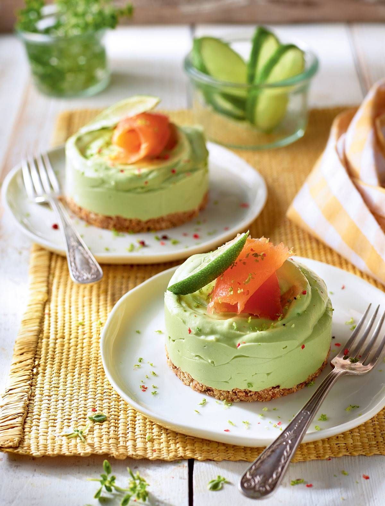
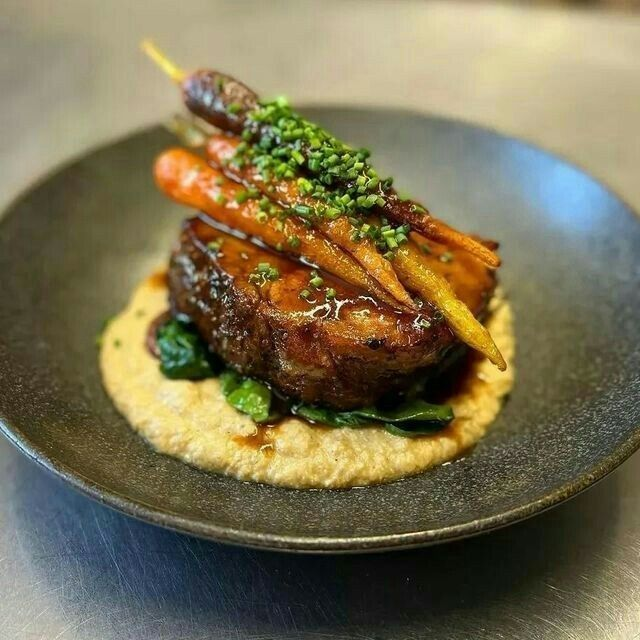
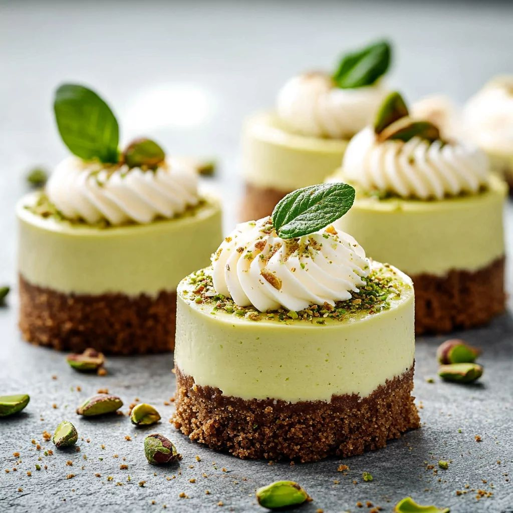
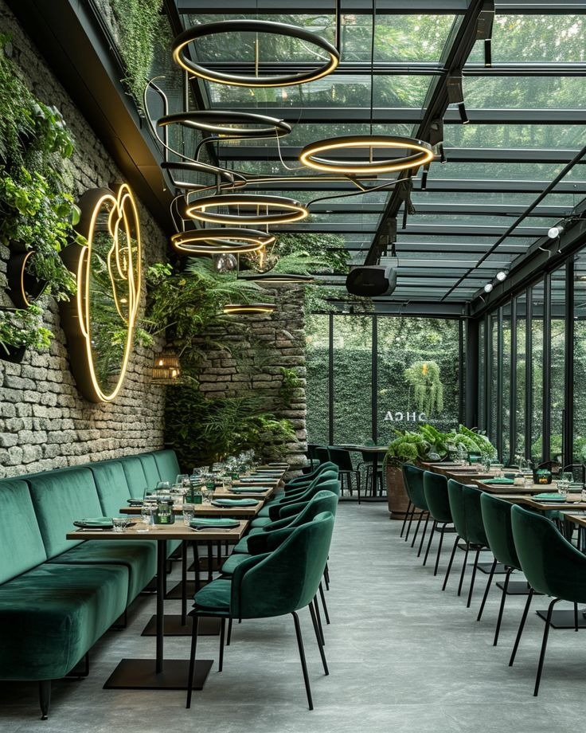
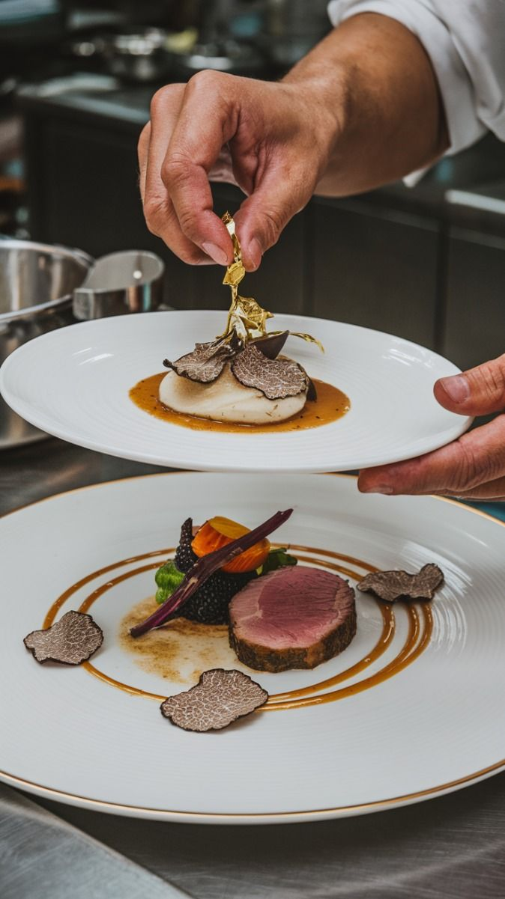
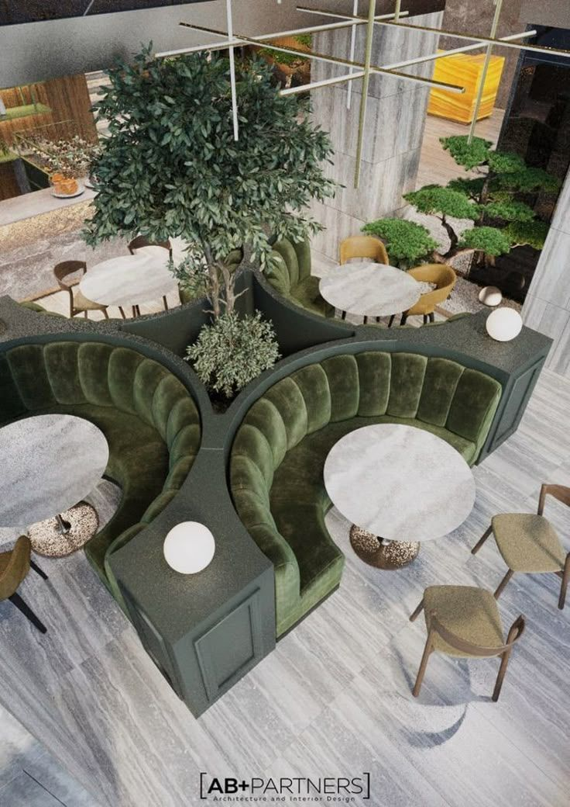

Sabores que abren el apetito.

Recetas que conquistan paladares.

Un final dulce y sofisticado.



Casa Marqués es un lugar donde la cocina artesanal se fusiona con ingredientes frescos de la tierra, en un ambiente cálido y sofisticado.